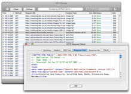

Aide de HTTPScoop
www.tuffcode.com
Bienvenue !
Introduction à HTTPScoop.
Utiliser HTTPScoop
Comment capturer des conversations HTTP.
Contrôler ce qui est capturé grâce aux préférences.
Interpréter les données capturées
Comprendre les informations que HTTPScoop vous fournit.
Référence des codes de réponse HTTP.
Résolution des problèmes
Obtenir de l'aide si vous ne voyez pas ce que vous espériez ou obtenez des messages d'erreurs.